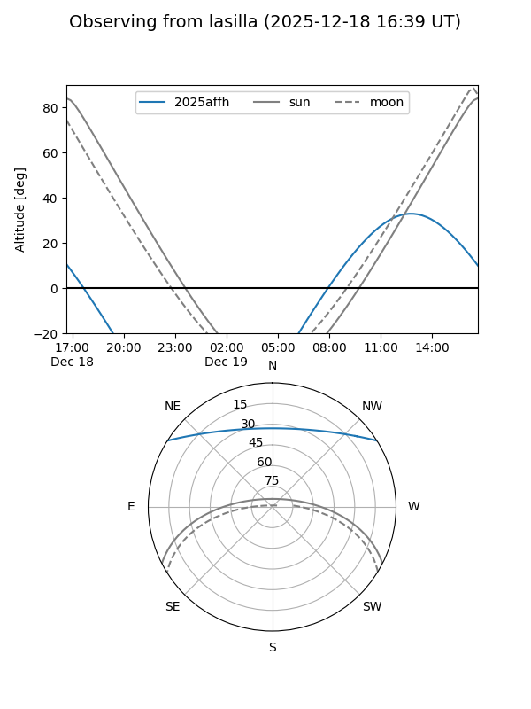
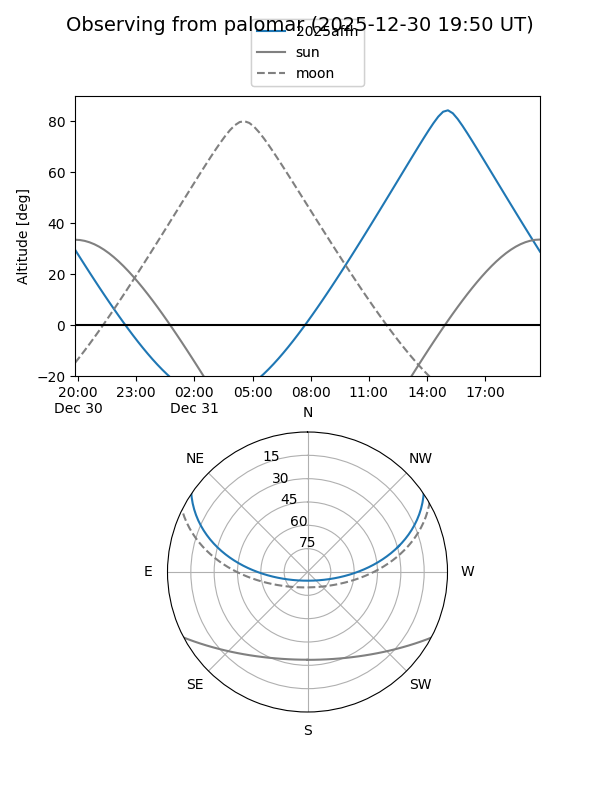
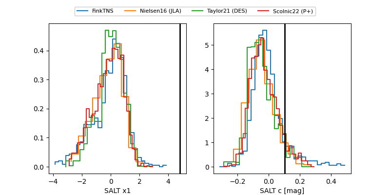

2025affh
Target 2025affh at 2025-12-31 16:59
Aliases and brokers:
FINK:
Lasair:
ALeRCE:
TNS:
YSE:
alt names
ZTF25acfjrir (ztf,fink_ztf)
2025affh (tns,yse)
Coordinates:
equatorial (ra, dec) = 208.7501,+27.89688
equatorial (HMS+DMS) = 13:55:00.01,+27:53:48.77
galactic (l, b) = (39.7226,+75.89543)
Flags:
Photometry:
last ztfg=19.77, ztfr=20.32
1 ztfg, 2 ztfr detections
Lightcurve

Visibility


Additional plots
